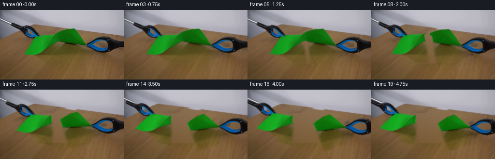
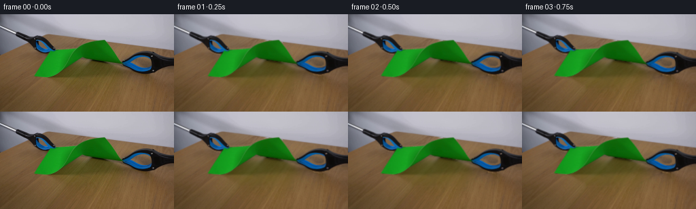
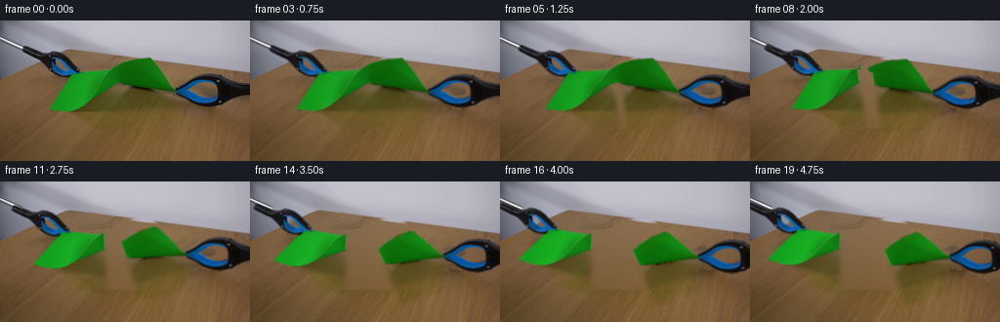
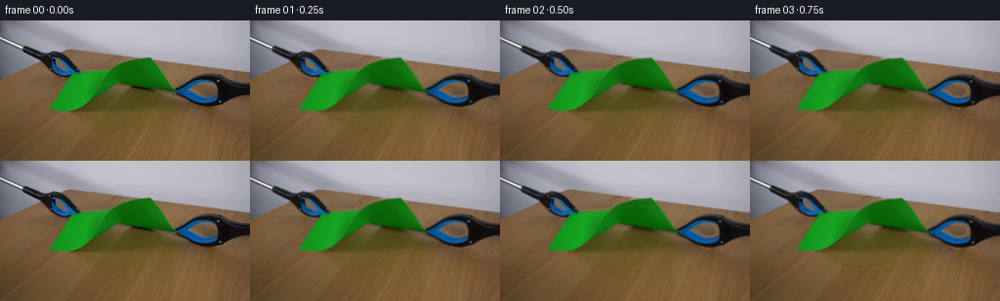

CODING AGENTS AS PIXEL WORLD MODELS
traex/GPT-6.1-Sol · 0045
点击播放 · 原生 RGB 像素
逐轮保存的候选
回放视频、检查图与代码变化。
每份候选均可单独播放。实际图片检查记录在下方工具轨迹中。
候选 01播放与检查图
点击播放 · 原生 RGB 像素


展开代码变化
--- 上一保存版本
+++ 本次保存版本
@@ -0,0 +1,209 @@
+from pathlib import Path
+import math
+import cv2
+import numpy as np
+from PIL import Image
+from scipy.ndimage import distance_transform_edt
+import artifact_io
+
+ROOT = Path(__file__).resolve().parent
+W,H,S=256,144,3
+
+def smooth(a):
+ a=np.clip(a,0,1)
+ return a*a*(3-2*a)
+
+def big(a):
+ return cv2.resize(a,(W*S,H*S),interpolation=cv2.INTER_LINEAR)
+
+def label_max(m):
+ n,lab,stats,_=cv2.connectedComponentsWithStats(m.astype(np.uint8))
+ return (lab == (1+np.argmax(stats[1:,4]))).astype(np.uint8)
+
+def dilate(m,n):
+ return cv2.dilate(m.astype(np.uint8),cv2.getStructuringElement(cv2.MORPH_ELLIPSE,(n,n)))
+
+def build():
+ src=np.array(Image.open(ROOT/'first_frame.png').convert('RGB'))
+ I=src.astype(np.float32)
+ Y,X=np.indices((H,W),dtype=np.float32)
+ r,g,b=I.transpose(2,0,1)
+ paper=label_max((g>r+10)&(g>b+10)&(g>25))
+ dark=((r<75)&(g<82)&(b<105))|((b>r+20)&(b>g+10))
+ lt=label_max(dark&(X>20)&(X<86)&(Y>23)&(Y<60)&(~paper.astype(bool)))
+ rt=label_max(dark&(X>176)&(Y>52)&(Y<91)&(~paper.astype(bool)))
+ tools=lt|rt
+ objects=tools|paper
+ edge=np.where(X<64,60-.47*X,30+.128*(X-64))
+ table=Y>edge+1.3
+ xx=(X-128)/128; yy=(Y-75)/75
+ terms=[np.ones_like(X),xx,yy,xx*xx,xx*yy,yy*yy,xx**3,xx*xx*yy,xx*yy*yy,yy**3]
+ A=np.stack(terms,-1)
+ # Table colour is estimated only from unobstructed original pixels.
+ good=table&(r-g>22)&(g-b>21)&(g-b<43)&(r>95)&(dilate(objects,11)==0)
+ good&=~((X>66)&(X<192)&(Y>62)&(Y<111))
+ fit=A[good]; vals=I[good]
+ co=np.linalg.lstsq(fit,vals,rcond=None)[0]
+ for _ in range(4):
+ error=np.linalg.norm(vals-fit@co,axis=1)
+ weight=np.minimum(1,5/(error+1e-5))
+ co=np.linalg.lstsq(fit*weight[:,None],vals*weight[:,None],rcond=None)[0]
+ clean=A@co
+ # Measured fine surface variation; no synthetic scene objects are introduced.
+ tile=I[65:109,5:45]
+ tex=tile-cv2.GaussianBlur(tile,(0,0),1.6)
+ noise=tex[(Y.astype(int)+3)%44,(X.astype(int)+Y.astype(int)//3)%40]
+ clean=np.clip(clean+noise*.64,0,255)
+ remove=dilate(objects,5)
+ filled=cv2.inpaint(src,remove*255,4,cv2.INPAINT_TELEA).astype(np.float32)
+ # Cast shadows are separated as a photographic difference layer, then
+ # carried with each paper fragment and softly projected onto the tabletop.
+ shroi=(X>48)&(X<204)&(Y>60)&(Y<111)&table
+ sh=(clean[:,:,0]-r>7)&(clean[:,:,2]-b>6)&shroi
+ sh=cv2.morphologyEx(sh.astype(np.uint8),cv2.MORPH_CLOSE,np.ones((5,5),np.uint8))
+ erase=np.maximum(remove,sh).astype(np.float32)
+ erase=cv2.GaussianBlur(erase,(0,0),.8)
+ erase=np.maximum(erase,remove)
+ # Respect the stationary rear edge of the tabletop.
+ tablemix=smooth((Y-edge+.3)/1.8)
+ replacement=clean*tablemix[:,:,None]+filled*(1-tablemix[:,:,None])
+ base=I*(1-erase[:,:,None])+replacement*erase[:,:,None]
+ shadow=np.clip(base-I,0,100)
+ shadow*=shroi[:,:,None]
+ shadow[objects>0]=0
+ # Fill the occluded portions of the shadow, retaining the recorded shadow
+ # in visible regions. The broad soft penumbra naturally persists after tearing.
+ smask=(dilate(paper,3)&shroi).astype(np.uint8)
+ shadow=cv2.inpaint(np.uint8(shadow),smask*255,6,cv2.INPAINT_TELEA).astype(np.float32)
+ shadow=cv2.GaussianBlur(shadow,(0,0),.65)
+ shadow*=shroi[:,:,None]
+ under=base-shadow
+
+ def matte(mask):
+ # The border alpha is reconstructed from the foreground/background
+ # mixture in the recorded RGB pixels rather than from a drawn silhouette.
+ inside=cv2.erode(mask,np.ones((3,3),np.uint8))>0
+ if inside.sum()<5: inside=mask>0
+ _,inds=distance_transform_edt(~inside,return_indices=True)
+ near=I[inds[0],inds[1]]
+ dist=near-under
+ alpha=np.sum((I-under)*dist,axis=2)/(np.sum(dist*dist,axis=2)+1e-5)
+ support=dilate(mask,3)>0
+ alpha=np.where(support,np.clip(alpha,0,1),0).astype(np.float32)
+ alpha[inside]=1
+ # Fine texture stays photographic, including blue highlights and black jaws.
+ rgb=np.where(alpha[:,:,None]>.06,
+ (I-under*(1-alpha[:,:,None]))/np.maximum(alpha[:,:,None],.06),near)
+ rgb=np.clip(rgb,0,255)
+ return big(alpha),big(rgb)
+ pa,pc=matte(paper)
+ la,lc=matte(lt)
+ ra,rc=matte(rt)
+ basehi=big(base)
+ shhi=big(shadow)
+ yh,xh=np.indices((H*S,W*S),dtype=np.float32)
+ x=(xh+.5)/S-.5; y=(yh+.5)/S-.5
+ # A short irregular, fiber-scale tear through the central folded neck.
+ nodes_y=np.array([36,46.5,48,49.2,50.1,51.4,52.2,53.3,54.1,55.2,56.0,57.4,58.2,59.3,60.1,61.3,62.2,63.5,65,105],np.float32)
+ nodes_x=np.array([115.9,116.4,116.1,117.0,116.5,117.5,116.9,117.8,117.1,118.2,117.6,118.5,117.8,118.8,118.1,119.1,118.4,120.0,120.6,126.7],np.float32)
+ seam=np.interp(y,nodes_y,nodes_x).astype(np.float32)
+ # Split subpixel coverage complementary, so the unbroken paper has no seam.
+ left=smooth((seam-x)*S+.5).astype(np.float32)
+ right=1-left
+ aleft=pa*left; aright=pa*right
+
+ def remap(arr,sx,sy):
+ return cv2.remap(arr,((sx+.5)*S-.5).astype(np.float32),((sy+.5)*S-.5).astype(np.float32),cv2.INTER_LINEAR,borderMode=cv2.BORDER_CONSTANT)
+
+ def paper_coord(sx,sy,side,d,progress,angle):
+ cut=np.interp(sy,nodes_y,nodes_x)
+ pivot=np.array([77.,54.] if side<0 else [180.,72.])
+ span=43. if side<0 else 61.
+ anch=smooth(np.clip(np.abs(sx-cut)/span,0,1))
+ tip=64-18*progress
+ release=smooth((sy-tip)/4.) if progress>0 else np.zeros_like(sy)
+ release=np.maximum(release,smooth((progress-.80)/.20))
+ weight=anch+(1-anch)*release
+ # Unfolding under load is small; material away from the crack is not
+ # elastically elongated. Once released it swings about the pinched corner.
+ theta=angle*release
+ cs=np.cos(theta); sn=np.sin(theta)
+ ux=sx-pivot[0]; uy=sy-pivot[1]
+ tx=pivot[0]+ux*cs-uy*sn+side*d*weight
+ ty=pivot[1]+ux*sn+uy*cs+side*d*.205*weight
+ # Slight relaxation of the hanging sheet after the crack runs through.
+ sag=1.15*smooth((progress-.6)/.4)*np.sin(np.clip(np.abs(ux)/70,0,1)*np.pi/2)**2
+ ty+=sag*release
+ return tx,ty
+
+ def paper_inverse(side,d,progress,angle):
+ sx=x-side*d; sy=y-side*d*.205
+ # Invert the smoothly deforming material map by fixed point iterations.
+ for _ in range(8):
+ tx,ty=paper_coord(sx,sy,side,d,progress,angle)
+ sx+=.85*(x-tx); sy+=.85*(y-ty)
+ return sx,sy
+
+ def affine_inverse(side,d,theta):
+ px,py=(77.,54.) if side<0 else (180.,72.)
+ ux=x-px-side*d; uy=y-py-side*d*.205
+ cs=math.cos(theta); sn=math.sin(theta)
+ return px+cs*ux+sn*uy,py-sn*ux+cs*uy
+
+ frames=[src.copy()]
+ for i in range(1,20):
+ t=i/4
+ # Real-time pull, tensile loading, propagating rip, then damped release.
+ if t<1.0:
+ d=3.5*smooth(t/1.0)
+ elif t<2.25:
+ d=3.5+5.0*smooth((t-1.)/1.25)
+ else:
+ d=8.5+16.5*smooth((t-2.25)/2.15)
+ progress=smooth((t-1.0)/1.25)
+ relaxed=smooth((t-2.10)/1.0)
+ osc=(math.exp(-max(0,t-2.25)*2.0)*math.sin(max(0,t-2.25)*7.8))
+ angleft=math.radians(13.0*relaxed+2.0*osc*relaxed)
+ angright=math.radians(-15.0*relaxed-2.5*osc*relaxed)
+ lmap=paper_inverse(-1,d,progress,angleft)
+ rmap=paper_inverse(1,d,progress,angright)
+ al=remap(aleft,*lmap); ar=remap(aright,*rmap)
+ # Very fine lighter torn paper fibers on the two newly exposed edges.
+ edge_dist=np.abs(x-seam)
+ tip=64-18*progress
+ torn=smooth((y-tip)/1.2)*smooth((t-1.0)/.35)
+ fibers=np.exp(-(edge_dist/.32)**2)*torn
+ fibercolour=np.array([54,56,29],np.float32)
+ colored=pc+fibers[:,:,None]*fibercolour
+ colored=np.clip(colored,0,255)
+ texl=remap(colored*aleft[:,:,None],*lmap)
+ texr=remap(colored*aright[:,:,None],*rmap)
+ # Gentle lighting changes from the physical change in tilt, rather than
+ # any camera or scene illumination change.
+ gl=1+.075*relaxed
+ gr=1+.11*relaxed
+ texl*=gl; texr*=gr
+ # Project the recorded diffuse paper shadow under both moving fragments.
+ split=smooth((seam+4-x)/10)
+ # Shadows translate more gently vertically because the paper is raised.
+ slmap=(lmap[0]-2.0*relaxed,lmap[1]+1.0*relaxed)
+ srmap=(rmap[0]+1.5*relaxed,rmap[1]+2.0*relaxed)
+ shl=remap(shhi*split[:,:,None],*slmap)
+ shr=remap(shhi*(1-split[:,:,None]),*srmap)
+ shadows=cv2.GaussianBlur(shl+shr,(0,0),.65*S)
+ image=np.clip(basehi-shadows,0,255)
+ alpha=np.clip(al+ar,0,1)
+ image=image*(1-alpha[:,:,None])+texl+texr
+ # Photographic rigid grabbers remain closed on their original corners.
+ for side,a,c in [(-1,la,lc),(1,ra,rc)]:
+ theta=math.radians(side*.7*relaxed)
+ mp=affine_inverse(side,d,theta)
+ aa=remap(a,*mp)
+ cc=remap(c*a[:,:,None],*mp)
+ image=image*(1-aa[:,:,None])+cc
+ out=cv2.resize(np.clip(image,0,255),(W,H),interpolation=cv2.INTER_AREA)
+ frames.append(np.uint8(np.clip(np.rint(out),0,255)))
+ return np.stack(frames)
+
+if __name__=='__main__':
+ artifact_io.save(build(),ROOT)
候选 02播放与检查图
点击播放 · 原生 RGB 像素


展开代码变化
--- 上一保存版本
+++ 本次保存版本
@@ -100,6 +100,8 @@
la,lc=matte(lt)
ra,rc=matte(rt)
basehi=big(base)
+ # Retain pixel-level detail in the locked-off background after supersampling.
+ basedetail=base-cv2.resize(basehi,(W,H),interpolation=cv2.INTER_AREA)
shhi=big(shadow)
yh,xh=np.indices((H*S,W*S),dtype=np.float32)
x=(xh+.5)/S-.5; y=(yh+.5)/S-.5
@@ -190,7 +192,8 @@
srmap=(rmap[0]+1.5*relaxed,rmap[1]+2.0*relaxed)
shl=remap(shhi*split[:,:,None],*slmap)
shr=remap(shhi*(1-split[:,:,None]),*srmap)
- shadows=cv2.GaussianBlur(shl+shr,(0,0),.65*S)
+ shadows=cv2.GaussianBlur(shl+shr,(0,0),(.65+.55*relaxed)*S)
+ shadows*=1-.22*relaxed
image=np.clip(basehi-shadows,0,255)
alpha=np.clip(al+ar,0,1)
image=image*(1-alpha[:,:,None])+texl+texr
@@ -201,7 +204,7 @@
aa=remap(a,*mp)
cc=remap(c*a[:,:,None],*mp)
image=image*(1-aa[:,:,None])+cc
- out=cv2.resize(np.clip(image,0,255),(W,H),interpolation=cv2.INTER_AREA)
+ out=cv2.resize(np.clip(image,0,255),(W,H),interpolation=cv2.INTER_AREA)+basedetail
frames.append(np.uint8(np.clip(np.rint(out),0,255)))
return np.stack(frames)
可观测工具轨迹
实际执行的命令与返回图片。
命令 1exit 0
/bin/bash -lc "ls -la && cat prompt.txt && printf '\\n--- RULES ---\\n' && cat GENERATION_RULES.md"
命令 2exit 0
/bin/bash -lc "cat artifact_io.py && python - <<'PY'
from PIL import Image
import numpy as np
im=np.array(Image.open('first_frame.png').convert('RGB'))
print('shape',im.shape)
print('corners',im[0,0],im[-1,-1]); print('ranges',im.min((0,1)),im.max((0,1)))
# color block summaries
for y in range(0,144,4):
s=''
for x in range(0,256,4):
r,g,b=im[y:y+4,x:x+4].mean((0,1))
if g>r*1.12 and g>b*1.08: c='G' if g>100 else 'g'
elif b>r*1.15 and b>g*1.06:c='B' if b>85 else 'b'
elif max(r,g,b)<45:c='#'
elif max(r,g,b)<95:c='o'
elif max(r,g,b)<150:c='-'
elif max(r,g,b)<205:c='.'
else:c=' '
s+=c
print(f'{y:3} {s}')
print('common',__import__('collections').Counter(map(tuple,im.reshape(-1,3))).most_common(15))
PY"命令 3exit 0
/bin/bash -lc "python - <<'PY'
import numpy as np
from PIL import Image
import cv2
im=np.array(Image.open('first_frame.png'))[:,:,:3]; r,g,b=im.transpose(2,0,1).astype(float)
m=(g>r+12)&(g>b+12)&(g>55)
n,lab,stats,cents=cv2.connectedComponentsWithStats(m.astype('uint8'))
print(stats)
for y in range(25,101):
x=np.where(m[y])[0]
if len(x):print(y, (int(x.min()),int(x.max())), ''.join('G' if a else ' ' for a in m[y,45:188]))
print('color points')
for y in range(32,100,4):
print(y,[(x,im[y,x].tolist()) for x in range(48,181,8)])
PY"命令 4exit 0
/bin/bash -lc "python - <<'PY'
from PIL import Image
import numpy as np,cv2
I=np.array(Image.open('first_frame.png')).astype(int);r,g,b=I.transpose(2,0,1)
m=(((r<65)&(g<75)&(b<100))|((b>r+20)&(b>g+10)))
for y in range(24,95,2):
line=''
for x in range(256):
R,G,B=I[y,x]
if G>R+12 and G>B+12 and G>50: c='G'
elif B>R+20 and B>G+10:c='B'
elif R<60 and G<75 and B<100:c='#'
elif R>G+10 and R>B+10:c='.'
else:c=' '
line+=c
print(f'{y:3} {line}')
# contiguous runs mask
for side,(xa,xb,ya,yb) in enumerate([(20,86,24,61),(175,256,52,94),(0,12,30,62)]):
print('side',side)
for y in range(ya,yb):
xs=np.where(m[y,xa:xb])[0]+xa
if len(xs):print(y, xs.min(),xs.max())
PY"命令 5exit 0
/bin/bash -lc "python - <<'PY'
import cv2,numpy as np
from PIL import Image
I=np.array(Image.open('first_frame.png')).astype(int)
# tool crops at px 1 classification
for name,xa,xb,ya,yb in [('left',20,86,24,60),('right',176,256,53,89)]:
print(name,'x',xa,'to',xb)
for y in range(ya,yb):
ss=''
for x in range(xa,xb):
r,g,b=I[y,x]
if g>r+12 and g>b+12:c='G'
elif b>r+20 and b>g+10:c='B'
elif max(r,g,b)<40:c='#'
elif r<70 and g<80 and b<105:c='o'
elif b>r+8:c='v'
elif r>g+10 and r>b+10:c='.'
else:c=' '
ss+=c
print(f'{y:3} {ss}')
PY"命令 6exit 0
/bin/bash -lc "python - <<'PY'
import numpy as np,cv2
from PIL import Image
I=np.array(Image.open('first_frame.png')).astype(float);r,g,b=I.transpose(2,0,1)
m=((g>r+10)&(g>b+10)&(g>25)).astype('uint8')
n,lab,stats,c=cv2.connectedComponentsWithStats(m)
print(stats)
cnt=max(cv2.findContours((lab==1).astype('uint8'),cv2.RETR_EXTERNAL,cv2.CHAIN_APPROX_SIMPLE)[0],key=cv2.contourArea)
print('paper contour',cv2.approxPolyDP(cnt,.7,True).reshape(-1,2).tolist())
print('Tools')
y,x=np.indices(r.shape)
for typ in ['left','right']:
roi=(x>20)&(x<86)&(y>23)&(y<60) if typ=='left' else (x>176)&(y>52)&(y<91)
tm=(((r<75)&(g<82)&(b<105)) |((b>r+20)&(b>g+10)))&roi
tm&=~(m>0)
nn,ll,ss,cc=cv2.connectedComponentsWithStats(tm.astype('uint8'))
print(typ, ss)
biggest=np.argmax(ss[1:,4])+1
cs,h=cv2.findContours((ll==biggest).astype('uint8'),cv2.RETR_CCOMP,cv2.CHAIN_APPROX_SIMPLE)
for cc in cs:
if cv2.contourArea(cc)>3: print(cv2.contourArea(cc),cv2.approxPolyDP(cc,.75,True).reshape(-1,2).tolist())
PY"命令 7exit 0
/bin/bash -lc "python - <<'PY'
import numpy as np,cv2
from PIL import Image
I=np.array(Image.open('first_frame.png')).astype(float);r,g,b=I.transpose(2,0,1)
for x in range(0,256,8):
ok=np.where((r[:,x]-g[:,x]>13)&(g[:,x]-b[:,x]>12)&(r[:,x]>90))[0]
print(x,ok[:8].tolist())
print('installed')
for s in ['cv2','scipy']:
a=__import__(s);print(s,a.__version__)
PY"命令 8exit 0
/bin/bash -lc "python - <<'PY'
from PIL import Image
import numpy as np
I=np.array(Image.open('first_frame.png'))
for y in range(24,66,2):
print(y,I[y,:12:2].tolist())
print('paper column')
for x in range(108,129):
print(x, [(y,I[y,x].tolist()) for y in [42,44,46,48,50,52,54,56,58,60,62,64,66]])
PY"命令 9exit 0
/bin/bash -lc "python - <<'PY'
import numpy as np
from PIL import Image
I=np.array(Image.open('first_frame.png'))
for y in [35,45,55,65,75,85,95,105,120,140]:
print(y,[(x,I[y,x].tolist()) for x in [20,35,45,85,105,125,185,200,240]])
PY"命令 10exit 0
/bin/bash -lc "cat > generate.py <<'PY'
from pathlib import Path
import math
import cv2
import numpy as np
from PIL import Image
from scipy.ndimage import distance_transform_edt
import artifact_io
ROOT = Path(__file__).resolve().parent
W,H,S=256,144,3
def smooth(a):
a=np.clip(a,0,1)
return a*a*(3-2*a)
def big(a):
return cv2.resize(a,(W*S,H*S),interpolation=cv2.INTER_LINEAR)
def label_max(m):
n,lab,stats,_=cv2.connectedComponentsWithStats(m.astype(np.uint8))
return (lab == (1+np.argmax(stats[1:,4]))).astype(np.uint8)
def dilate(m,n):
return cv2.dilate(m.astype(np.uint8),cv2.getStructuringElement(cv2.MORPH_ELLIPSE,(n,n)))
def build():
src=np.array(Image.open(ROOT/'first_frame.png').convert('RGB'))
I=src.astype(np.float32)
Y,X=np.indices((H,W),dtype=np.float32)
r,g,b=I.transpose(2,0,1)
paper=label_max((g>r+10)&(g>b+10)&(g>25))
dark=((r<75)&(g<82)&(b<105))|((b>r+20)&(b>g+10))
lt=label_max(dark&(X>20)&(X<86)&(Y>23)&(Y<60)&(~paper.astype(bool)))
rt=label_max(dark&(X>176)&(Y>52)&(Y<91)&(~paper.astype(bool)))
tools=lt|rt
objects=tools|paper
edge=np.where(X<64,60-.47*X,30+.128*(X-64))
table=Y>edge+1.3
xx=(X-128)/128; yy=(Y-75)/75
terms=[np.ones_like(X),xx,yy,xx*xx,xx*yy,yy*yy,xx**3,xx*xx*yy,xx*yy*yy,yy**3]
A=np.stack(terms,-1)
# Table colour is estimated only from unobstructed original pixels.
good=table&(r-g>22)&(g-b>21)&(g-b<43)&(r>95)&(dilate(objects,11)==0)
good&=~((X>66)&(X<192)&(Y>62)&(Y<111))
fit=A[good]; vals=I[good]
co=np.linalg.lstsq(fit,vals,rcond=None)[0]
for _ in range(4):
error=np.linalg.norm(vals-fit@co,axis=1)
weight=np.minimum(1,5/(error+1e-5))
co=np.linalg.lstsq(fit*weight[:,None],vals*weight[:,None],rcond=None)[0]
clean=A@co
# Measured fine surface variation; no synthetic scene objects are introduced.
tile=I[65:109,5:45]
tex=tile-cv2.GaussianBlur(tile,(0,0),1.6)
noise=tex[(Y.astype(int)+3)%44,(X.astype(int)+Y.astype(int)//3)%40]
clean=np.clip(clean+noise*.64,0,255)
remove=dilate(objects,5)
filled=cv2.inpaint(src,remove*255,4,cv2.INPAINT_TELEA).astype(np.float32)
# Cast shadows are separated as a photographic difference layer, then
# carried with each paper fragment and softly projected onto the tabletop.
shroi=(X>48)&(X<204)&(Y>60)&(Y<111)&table
sh=(clean[:,:,0]-r>7)&(clean[:,:,2]-b>6)&shroi
sh=cv2.morphologyEx(sh.astype(np.uint8),cv2.MORPH_CLOSE,np.ones((5,5),np.uint8))
erase=np.maximum(remove,sh).astype(np.float32)
erase=cv2.GaussianBlur(erase,(0,0),.8)
erase=np.maximum(erase,remove)
# Respect the stationary rear edge of the tabletop.
tablemix=smooth((Y-edge+.3)/1.8)
replacement=clean*tablemix[:,:,None]+filled*(1-tablemix[:,:,None])
base=I*(1-erase[:,:,None])+replacement*erase[:,:,None]
shadow=np.clip(base-I,0,100)
shadow*=shroi[:,:,None]
shadow[objects>0]=0
# Fill the occluded portions of the shadow, retaining the recorded shadow
# in visible regions. The broad soft penumbra naturally persists after tearing.
smask=(dilate(paper,3)&shroi).astype(np.uint8)
shadow=cv2.inpaint(np.uint8(shadow),smask*255,6,cv2.INPAINT_TELEA).astype(np.float32)
shadow=cv2.GaussianBlur(shadow,(0,0),.65)
shadow*=shroi[:,:,None]
under=base-shadow
def matte(mask):
# The border alpha is reconstructed from the foreground/background
# mixture in the recorded RGB pixels rather than from a drawn silhouette.
inside=cv2.erode(mask,np.ones((3,3),np.uint8))>0
if inside.sum()<5: inside=mask>0
_,inds=distance_transform_edt(~inside,return_indices=True)
near=I[inds[0],inds[1]]
dist=near-under
alpha=np.sum((I-under)*dist,axis=2)/(np.sum(dist*dist,axis=2)+1e-5)
support=dilate(mask,3)>0
alpha=np.where(support,np.clip(alpha,0,1),0).astype(np.float32)
alpha[inside]=1
# Fine texture stays photographic, including blue highlights and black jaws.
rgb=np.where(alpha[:,:,None]>.06,
(I-under*(1-alpha[:,:,None]))/np.maximum(alpha[:,:,None],.06),near)
rgb=np.clip(rgb,0,255)
return big(alpha),big(rgb)
pa,pc=matte(paper)
la,lc=matte(lt)
ra,rc=matte(rt)
basehi=big(base)
shhi=big(shadow)
yh,xh=np.indices((H*S,W*S),dtype=np.float32)
x=(xh+.5)/S-.5; y=(yh+.5)/S-.5
# A short irregular, fiber-scale tear through the central folded neck.
nodes_y=np.array([36,46.5,48,49.2,50.1,51.4,52.2,53.3,54.1,55.2,56.0,57.4,58.2,59.3,60.1,61.3,62.2,63.5,65,105],np.float32)
nodes_x=np.array([115.9,116.4,116.1,117.0,116.5,117.5,116.9,117.8,117.1,118.2,117.6,118.5,117.8,118.8,118.1,119.1,118.4,120.0,120.6,126.7],np.float32)
seam=np.interp(y,nodes_y,nodes_x).astype(np.float32)
# Split subpixel coverage complementary, so the unbroken paper has no seam.
left=smooth((seam-x)*S+.5).astype(np.float32)
right=1-left
aleft=pa*left; aright=pa*right
def remap(arr,sx,sy):
return cv2.remap(arr,((sx+.5)*S-.5).astype(np.float32),((sy+.5)*S-.5).astype(np.float32),cv2.INTER_LINEAR,borderMode=cv2.BORDER_CONSTANT)
def paper_coord(sx,sy,side,d,progress,angle):
cut=np.interp(sy,nodes_y,nodes_x)
pivot=np.array([77.,54.] if side<0 else [180.,72.])
span=43. if side<0 else 61.
anch=smooth(np.clip(np.abs(sx-cut)/span,0,1))
tip=64-18*progress
release=smooth((sy-tip)/4.) if progress>0 else np.zeros_like(sy)
release=np.maximum(release,smooth((progress-.80)/.20))
weight=anch+(1-anch)*release
# Unfolding under load is small; material away from the crack is not
# elastically elongated. Once released it swings about the pinched corner.
theta=angle*release
cs=np.cos(theta); sn=np.sin(theta)
ux=sx-pivot[0]; uy=sy-pivot[1]
tx=pivot[0]+ux*cs-uy*sn+side*d*weight
ty=pivot[1]+ux*sn+uy*cs+side*d*.205*weight
# Slight relaxation of the hanging sheet after the crack runs through.
sag=1.15*smooth((progress-.6)/.4)*np.sin(np.clip(np.abs(ux)/70,0,1)*np.pi/2)**2
ty+=sag*release
return tx,ty
def paper_inverse(side,d,progress,angle):
sx=x-side*d; sy=y-side*d*.205
# Invert the smoothly deforming material map by fixed point iterations.
for _ in range(8):
tx,ty=paper_coord(sx,sy,side,d,progress,angle)
sx+=.85*(x-tx); sy+=.85*(y-ty)
return sx,sy
def affine_inverse(side,d,theta):
px,py=(77.,54.) if side<0 else (180.,72.)
ux=x-px-side*d; uy=y-py-side*d*.205
cs=math.cos(theta); sn=math.sin(theta)
return px+cs*ux+sn*uy,py-sn*ux+cs*uy
frames=[src.copy()]
for i in range(1,20):
t=i/4
# Real-time pull, tensile loading, propagating rip, then damped release.
if t<1.0:
d=3.5*smooth(t/1.0)
elif t<2.25:
d=3.5+5.0*smooth((t-1.)/1.25)
else:
d=8.5+16.5*smooth((t-2.25)/2.15)
progress=smooth((t-1.0)/1.25)
relaxed=smooth((t-2.10)/1.0)
osc=(math.exp(-max(0,t-2.25)*2.0)*math.sin(max(0,t-2.25)*7.8))
angleft=math.radians(13.0*relaxed+2.0*osc*relaxed)
angright=math.radians(-15.0*relaxed-2.5*osc*relaxed)
lmap=paper_inverse(-1,d,progress,angleft)
rmap=paper_inverse(1,d,progress,angright)
al=remap(aleft,*lmap); ar=remap(aright,*rmap)
# Very fine lighter torn paper fibers on the two newly exposed edges.
edge_dist=np.abs(x-seam)
tip=64-18*progress
torn=smooth((y-tip)/1.2)*smooth((t-1.0)/.35)
fibers=np.exp(-(edge_dist/.32)**2)*torn
fibercolour=np.array([54,56,29],np.float32)
colored=pc+fibers[:,:,None]*fibercolour
colored=np.clip(colored,0,255)
texl=remap(colored*aleft[:,:,None],*lmap)
texr=remap(colored*aright[:,:,None],*rmap)
# Gentle lighting changes from the physical change in tilt, rather than
# any camera or scene illumination change.
gl=1+.075*relaxed
gr=1+.11*relaxed
texl*=gl; texr*=gr
# Project the recorded diffuse paper shadow under both moving fragments.
split=smooth((seam+4-x)/10)
# Shadows translate more gently vertically because the paper is raised.
slmap=(lmap[0]-2.0*relaxed,lmap[1]+1.0*relaxed)
srmap=(rmap[0]+1.5*relaxed,rmap[1]+2.0*relaxed)
shl=remap(shhi*split[:,:,None],*slmap)
shr=remap(shhi*(1-split[:,:,None]),*srmap)
shadows=cv2.GaussianBlur(shl+shr,(0,0),.65*S)
image=np.clip(basehi-shadows,0,255)
alpha=np.clip(al+ar,0,1)
image=image*(1-alpha[:,:,None])+texl+texr
# Photographic rigid grabbers remain closed on their original corners.
for side,a,c in [(-1,la,lc),(1,ra,rc)]:
theta=math.radians(side*.7*relaxed)
mp=affine_inverse(side,d,theta)
aa=remap(a,*mp)
cc=remap(c*a[:,:,None],*mp)
image=image*(1-aa[:,:,None])+cc
out=cv2.resize(np.clip(image,0,255),(W,H),interpolation=cv2.INTER_AREA)
frames.append(np.uint8(np.clip(np.rint(out),0,255)))
return np.stack(frames)
if __name__=='__main__':
artifact_io.save(build(),ROOT)
PY
python generate.py"命令 11exit 0
/bin/bash -lc "python - <<'PY'
from PIL import Image
import numpy as np,cv2
for f in [0,1,4,6,8,9,12,16,19]:
I=np.array(Image.open(f'frames/{f:02}.png')).astype(float);r,g,b=I.transpose(2,0,1)
m=((g>r+12)&(g>b+12)&(g>40)).astype('uint8')
n,l,s,c=cv2.connectedComponentsWithStats(m)
print('\\nFRAME',f,'paper',s[1:].tolist())
if f in [0,4,8,12,19]:
for y in range(24,108,3):
ss=''
for x in range(0,256,3):
R,G,B=I[y:y+3,x:x+3].mean((0,1))
if G>R+12 and G>B+12 and G>50:char='G' if G>110 else 'g'
elif B>R+20 and B>G+10:char='B'
elif R<65 and G<78 and B<105:char='#'
elif R>G+16 and G>B+12:char='.'
else:char=' '
ss+=char
print(f'{y:3} {ss}')
F=np.stack([np.array(Image.open(f'frames/{i:02}.png')) for i in range(20)])
print('max corner changes',np.abs(F[:,0].astype(int)-F[0,0].astype(int)).max(),np.abs(F[:,120:].astype(int)-F[0,120:].astype(int)).max())
print('differences',np.abs(np.diff(F.astype(float),axis=0)).mean((1,2,3)))
PY"命令 12exit 0
/bin/bash -lc "python - <<'PY'
p='generate.py'
s=open(p).read().replace('basehi=big(base)\\n shhi=big(shadow)', 'basehi=big(base)\\n # Retain pixel-level detail in the locked-off background after supersampling.\\n basedetail=base-cv2.resize(basehi,(W,H),interpolation=cv2.INTER_AREA)\\n shhi=big(shadow)')
s=s.replace('shadows=cv2.GaussianBlur(shl+shr,(0,0),.65*S)', 'shadows=cv2.GaussianBlur(shl+shr,(0,0),(.65+.55*relaxed)*S)\\n shadows*=1-.22*relaxed')
s=s.replace('out=cv2.resize(np.clip(image,0,255),(W,H),interpolation=cv2.INTER_AREA)', 'out=cv2.resize(np.clip(image,0,255),(W,H),interpolation=cv2.INTER_AREA)+basedetail')
open(p,'w').write(s)
PY
python generate.py"命令 13exit 0
/bin/bash -lc "python - <<'PY'
import numpy as np
from PIL import Image
from pathlib import Path
p=np.load('pixels.npz')['pixels']
f=np.array(Image.open('frames/00.png').convert('RGB'))
s=np.array(Image.open('first_frame.png').convert('RGB'))
assert np.array_equal(f,s)
assert p.shape==(144,256,20)
assert len(list(Path('frames').glob('*.png')))==20
last=np.array(Image.open('frames/19.png')).astype(int)
print('Verified: 20 RGB frames, 256x144, frame 00 pixel-identical.')
print('Top stationary-region maximum difference:',np.max(np.abs(last[:20]-s[:20].astype(int))))
print('Saved pixels.npz and index.html')
PY"保存候选 2 份；完成命令 13 次；可验证图片返回 0 张。原始 API 响应与完整日志保留在本地。